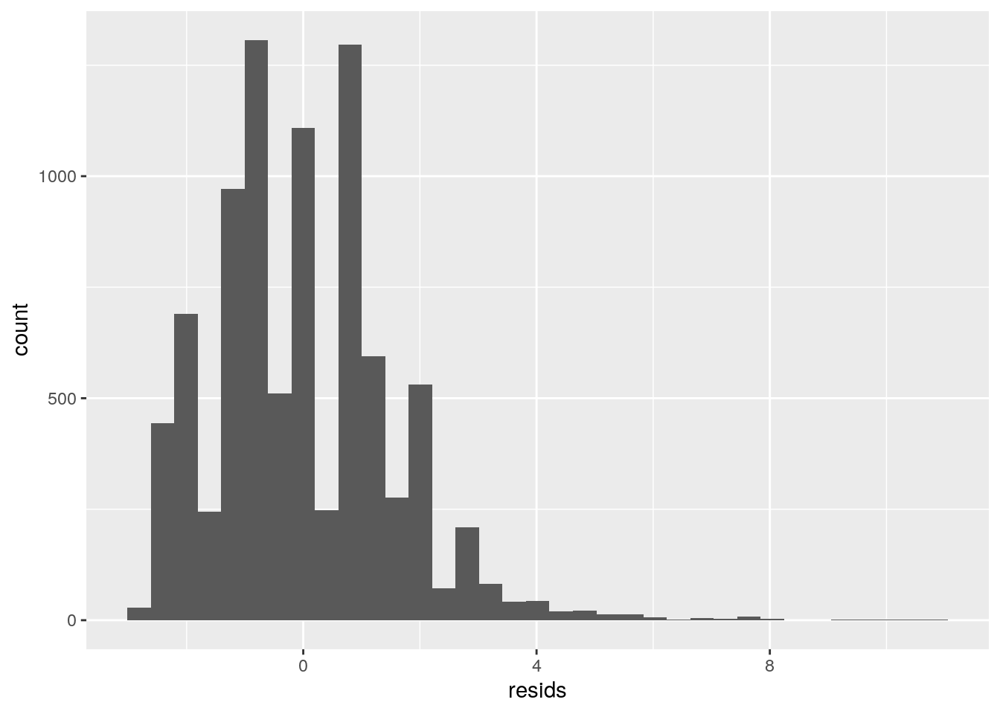

knitr::opts_chunk$set(warning = FALSE, message = FALSE)
# Load data/ Introduce dataset
HealthInsurance <- read.csv("HealthInsurance.csv",
header = TRUE)
ncol(HealthInsurance)## [1] 12nrow(HealthInsurance)## [1] 8802library(glmnet)
library(lmtest)
library(plotROC)
library(pROC)The HealthInsurance dataset was collected from the Medical Expenditure Panel Survey in 1996. There are 8,802 observations of 11 different variables. The first column, x, just contains a number to represent the distinct participants. The health variable is a self-reported question, where the participant answered yes or no for whether they considered themselves healthy. The age and sex of the participant were also recorded. The insurance, married, and selfemp variables were all yes/no questions for whether they were insured, married, and self-employed respectively. The family variable was a numerical variable for the size of the particpant's family. Both ethnicity and education were categorical variables. Ethnicity indicated whether a person was African American, caucasion, or other. The education variable tells us the highest degree obtained with no degree, GED, high school, bachelor, master, PhD, or other. The region variable contains the categories west, midwest, south, and northeast. In this project, I will be viewing the different relationships among many of these variables.
# MANOVA
# Compute MANOVA across region
manova_healthins <- manova(cbind(age, family) ~ region,
data = HealthInsurance)
# ANOVA
summary.aov(manova_healthins)## Response age :
## Df Sum Sq Mean Sq F value Pr(>F)
## region 3 2181 727.16 5.9002 0.0005111 ***
## Residuals 8798 1084305 123.24
## ---
## Signif. codes: 0 '***' 0.001 '**' 0.01 '*' 0.05 '.' 0.1 ' ' 1
##
## Response family :
## Df Sum Sq Mean Sq F value Pr(>F)
## region 3 69.3 23.1034 9.5256 2.808e-06 ***
## Residuals 8798 21338.7 2.4254
## ---
## Signif. codes: 0 '***' 0.001 '**' 0.01 '*' 0.05 '.' 0.1 ' ' 1# Perform post-hoc tests for the sites that differ
pairwise.t.test(HealthInsurance$age, HealthInsurance$region,
p.adj = "none")##
## Pairwise comparisons using t tests with pooled SD
##
## data: HealthInsurance$age and HealthInsurance$region
##
## midwest northeast south
## northeast 0.03613 - -
## south 0.16519 0.33198 -
## west 0.07065 0.00014 0.00075
##
## P value adjustment method: nonepairwise.t.test(HealthInsurance$family, HealthInsurance$region,
p.adj = "none")##
## Pairwise comparisons using t tests with pooled SD
##
## data: HealthInsurance$family and HealthInsurance$region
##
## midwest northeast south
## northeast 0.00170 - -
## south 0.00083 0.79612 -
## west 1.2e-07 0.05703 0.01363
##
## P value adjustment method: none# Hypothesis tests run
2 * 2 + 1 + 2## [1] 7# 1 MANOVA, 2 ANOVA, 4 t tests
# Type 1 errors
1 - ((0.95)^7)## [1] 0.3016627# Bonferroni Correction
0.05/7## [1] 0.007142857# MANOVA Assumptions install.packages('rstatix')
library(rstatix)
group <- HealthInsurance$region
DVs <- HealthInsurance %>% select(age, family)
# Test multivariate normality for each group (null:
# assumption met)
sapply(split(DVs, group), mshapiro_test)## midwest northeast south west
## statistic 0.9472115 0.9934637 0.9544349 0.965652
## p.value 2.431097e-26 8.863788e-07 5.755464e-30 1.552239e-21# If any p<.05, stop (assumption violated). If not,
# test homogeneity of covariance matrices
# Box's M test (null: assumption met)
box_m(DVs, group)## # A tibble: 1 x 4
## statistic p.value parameter method
## <dbl> <dbl> <dbl> <chr>
## 1 130. 1.39e-23 9 Box's M-test for Homogeneity of Covariance Matri…# Optionally, view covariance matrices for each
# group
lapply(split(DVs, group), cov)## $midwest
## age family
## age 126.351133 -1.935054
## family -1.935054 2.098000
##
## $northeast
## age family
## age 119.066331 -1.954024
## family -1.954024 2.060537
##
## $south
## age family
## age 125.15202 -2.370010
## family -2.37001 2.338695
##
## $west
## age family
## age 120.710339 -2.697025
## family -2.697025 3.188357The MANOVA showed a significant difference in the effect of region on both the number of members in the family and age of the participant. As a result, an individual ANOVA was computed for both age and family size. There was a significant difference in age of the participants between the northeast and midwest, the west and northeast, and the south and west because they all had p-values less than .05. For the same reason, there was a significant difference in family size found between the northwest and midwest regions, the south and midwest regions, the west and midwest regions, and the south and west regions. There were a total of 7 hypothesis tests run because each of the two post hoc test had 2 tests and there were also 2 ANOVA tests and a MANOVA. As a result, the probability of making an error is 0.3017 and a Bonferroni adjusted significance level of 0.00714 should be used. The multivariate normality assumption and the covariance assumptions were not met. Using the Bonferroni adjusted significance levels, there is a significant difference in the effect of region on age of participants between the northeast and west and the west and south. In addition, there is a significant difference in the effect of region on family size between the midwest and northeast, midwest and south, and the midwest and west.
# Randomization Test F-statistic/ANOVA for age and
# insured
library(dplyr)
randtest <- HealthInsurance %>% select(insurance, age)
# Observed F
summary(aov(age ~ insurance, data = HealthInsurance))## Df Sum Sq Mean Sq F value Pr(>F)
## insurance 1 24781 24781 205.4 <2e-16 ***
## Residuals 8800 1061706 121
## ---
## Signif. codes: 0 '***' 0.001 '**' 0.01 '*' 0.05 '.' 0.1 ' ' 1obs_F <- 205.4
# null distribution for F
Fs <- replicate(1000, {
new <- HealthInsurance %>% mutate(age = sample(age))
SSW <- new %>% group_by(region) %>% summarize(SSW = sum((age -
mean(age))^2)) %>% summarize(sum(SSW)) %>%
pull
SSB <- new %>% mutate(mean = mean(age)) %>% group_by(region) %>%
mutate(groupmean = mean(age)) %>% summarize(SSB = sum((mean -
groupmean)^2)) %>% summarize(sum(SSB)) %>%
pull
# Compute f statistic (SSB/k-1)/(N-k)
(SSB/1)/(SSW/8800)
})
# Computing p-value from f-statistic #df1=k-1,
# df2=N-k
pf(0.03050547, df1 = 1, df2 = 8800, lower.tail = F)## [1] 0.8613523hist(Fs, prob = T)
abline(v = obs_F, col = "red", add = T)The randomization test performed was an F-statistic/ANOVA to determine the association between whether a participant was insured and their age. The null hypothesis is that there will be no difference in the age of people who are or are not insured. The alternative hypothesis is that there will be a difference in the age of those insured and not insured. The ANOVA test showed a significant difference in what age of participant had health insurance or not (with a p-value of <2e-16) and an F-statistic of 205.4. Next, I simulated the F distribution under the assumption of the null hypothesis. The F-statistic for the null hypothesis was 0.0305. From the large difference in the F-statistic and the histogram (the obs_F does not even show up on the histogram), I may reject the null hypothesis and conclude there is a significant difference in the ages of participants who have or do not have insurance.
# Linear Regression Model
library(tidyverse)
HealthIns <- HealthInsurance %>% mutate(health = ifelse(health ==
"yes", 1, 0))
HealthIns <- HealthInsurance %>% mutate(insurance = ifelse(insurance ==
"yes", 1, 0))
# Building linear regression model
q2 <- lm(family ~ age * insurance, data = HealthIns)
summary(q2)##
## Call:
## lm(formula = family ~ age * insurance, data = HealthIns)
##
## Residuals:
## Min 1Q Median 3Q Max
## -2.6840 -1.0637 -0.1296 0.9528 10.9858
##
## Coefficients:
## Estimate Std. Error t value Pr(>|t|)
## (Intercept) 4.045267 0.121716 33.235 < 2e-16 ***
## age -0.020069 0.003261 -6.154 7.86e-10 ***
## insurance -0.355488 0.140190 -2.536 0.0112 *
## age:insurance 0.003593 0.003671 0.979 0.3278
## ---
## Signif. codes: 0 '***' 0.001 '**' 0.01 '*' 0.05 '.' 0.1 ' ' 1
##
## Residual standard error: 1.544 on 8798 degrees of freedom
## Multiple R-squared: 0.02061, Adjusted R-squared: 0.02028
## F-statistic: 61.73 on 3 and 8798 DF, p-value: < 2.2e-16# Mean center
HealthIns <- HealthIns %>% mutate(family_c = family -
mean(family, na.rm = T))
HealthIns <- HealthIns %>% mutate(age_c = age - mean(age,
na.rm = T))
q2_c <- lm(family_c ~ age_c * insurance, data = HealthIns)
summary(q2_c)##
## Call:
## lm(formula = family_c ~ age_c * insurance, data = HealthIns)
##
## Residuals:
## Min 1Q Median 3Q Max
## -2.6840 -1.0637 -0.1296 0.9528 10.9858
##
## Coefficients:
## Estimate Std. Error t value Pr(>|t|)
## (Intercept) 0.170328 0.038502 4.424 9.81e-06 ***
## age_c -0.020069 0.003261 -6.154 7.86e-10 ***
## insurance -0.215599 0.042689 -5.050 4.50e-07 ***
## age_c:insurance 0.003593 0.003671 0.979 0.328
## ---
## Signif. codes: 0 '***' 0.001 '**' 0.01 '*' 0.05 '.' 0.1 ' ' 1
##
## Residual standard error: 1.544 on 8798 degrees of freedom
## Multiple R-squared: 0.02061, Adjusted R-squared: 0.02028
## F-statistic: 61.73 on 3 and 8798 DF, p-value: < 2.2e-16# Plot regression
library(ggplot2)
ggplot(HealthIns, aes(x = age_c, y = family_c, group = insurance)) +
geom_point(aes(color = insurance)) + geom_smooth(method = "lm",
aes(color = insurance))# Assumptions homeoskedacity
resids <- q2_c$residuals
fitvals <- q2_c$fitted.values
ggplot() + geom_point(aes(fitvals, resids)) + geom_hline(yintercept = 0,
color = "red")# normality
ggplot() + geom_histogram(aes(resids), bins = 35)
# linearity
ggplot() + geom_qq(aes(sample = resids)) + geom_qq_line(aes(sample = resids,
color = "red")) + theme(legend.position = "none")# Recompute with robust SE
library(lmtest)
library(sandwich)
coeftest(q2_c, vcov = vcovHC(q2_c))##
## t test of coefficients:
##
## Estimate Std. Error t value Pr(>|t|)
## (Intercept) 0.1703282 0.0453912 3.7524 0.0001762 ***
## age_c -0.0200694 0.0038277 -5.2432 1.615e-07 ***
## insurance -0.2155993 0.0486143 -4.4349 9.324e-06 ***
## age_c:insurance 0.0035927 0.0041342 0.8690 0.3848625
## ---
## Signif. codes: 0 '***' 0.001 '**' 0.01 '*' 0.05 '.' 0.1 ' ' 1This model predicts family size of the participant using their age and whether or not they had insurance. An intercept of 0.1703 means that a person of average age with insurance has a family size of 0.1703. The age_c coefficient of -0.02007 means that for every 1 year increase in age, the family size of a participant decreases by 0.02007 while controlling for whether or not a participant has insurance. The insurance coefficient of -0.215599 means that while controlling for age, those with insurance have an average family size of 0.2156 smaller than families without insurance. The age_c:insurance coefficient of 0.003593 means the slope of family size of a participant who has insurance is 0.003593 greater than that for participants without insurance. Based on the graphs, my data seems to meet the homeoskedacity but not normality and linearity assumptions. After recomputing with robust standard errors, the results were the same as before the robust standard errors because the SEs also did not change. With an adjusted R-squared value of 0.02028, my model only explains 2.03% of the variation in outcome.
# Interaction, Bootstrapped SEs
set.seed(1234)
fit <- lm(family_c ~ age_c * insurance, data = HealthIns)
resids <- fit$residuals
fitted <- fit$fitted.values
residresamp <- replicate(5000, {
new_resids <- sample(resids, replace = TRUE)
HealthIns$new_y <- fitted + new_resids
fit <- lm(new_y ~ insurance * age_c, data = HealthIns)
coef(fit)
})
residresamp %>% t %>% as.data.frame %>% summarize_all(sd)## (Intercept) insurance age_c insurance:age_c
## 1 0.03854105 0.04268737 0.003287699 0.003696092The bootstrapped model has lower standard errors than the robust model. Lower standard errors indicate higher t-values and lower p-values. The boostrapped intercept of 0.0383 is lower than the robust intercept of 0.1703282, which means boostrapped intercept has a lower standard error, higher t-value, and lower p-value. The boostrapped coefficients for insurance and mean-centered age are also less than the robust coefficients, but the robust age_c:insurance coefficient is 0.0035927, which is slightly smaller than the same boostrapped coefficient of 0.00364392. For the insurance:age_c variable, the boostrapped coefficient has a higher standard error, and so a lower t-value and higher p-value. As the p-value increases, it is more likely that the null hypothesis can be rejected.
# Logistic Regression with Binary Variable
library(plotROC)
# Regression
newins <- as.data.frame(HealthInsurance)
newins1 <- newins %>% mutate(y = ifelse(insurance ==
"yes", 1, 0))
newins1 <- newins1 %>% mutate(married = ifelse(married ==
"yes", 1, 0))
newins1 <- newins1 %>% mutate(selfemp = ifelse(selfemp ==
"yes", 1, 0))
glmfit <- glm(y ~ married + selfemp, data = newins1,
family = "binomial")
# glmfit <- glm(y ~ ., data = newins1, family =
# 'binomial')
coeftest(glmfit)##
## z test of coefficients:
##
## Estimate Std. Error z value Pr(>|z|)
## (Intercept) 0.976912 0.038950 25.081 < 2.2e-16 ***
## married 0.989879 0.055754 17.755 < 2.2e-16 ***
## selfemp -0.897588 0.075187 -11.938 < 2.2e-16 ***
## ---
## Signif. codes: 0 '***' 0.001 '**' 0.01 '*' 0.05 '.' 0.1 ' ' 1exp(coef(glmfit)) %>% data.frame()## .
## (Intercept) 2.6562419
## married 2.6909083
## selfemp 0.4075514# Confusion Matrix
prob <- predict(glmfit, type = "response")
table(truth = newins1$y, prediction = as.numeric(prob >
0.52)) %>% addmargins## prediction
## truth 0 1 Sum
## 0 136 1614 1750
## 1 128 6924 7052
## Sum 264 8538 8802# Accuracy
(136 + 6924)/8802## [1] 0.8020904# Sensitivity TPR
6924/8538## [1] 0.8109628# Precision PPV
6924/8538## [1] 0.8109628# Specificity TNR
136/264## [1] 0.5151515# AUC
class_diag(prob, newins1$y)## acc sens spec ppv f1 auc
## 1 0.8011815 1 0 0.8011815 0.8896178 0.6353701# Density plot
library(ggplot2)
ggplot(newins1, aes(predict(glmfit), fill = y)) + geom_density(alpha = 0.3) +
geom_vline(xintercept = 0, lty = 2)# ROC curve
library(plotROC)
myROC <- ggplot(newins1) + geom_roc(aes(d = y, m = prob),
n.cuts = 0) + geom_segment(aes(x = 0, xend = 1,
y = 0, yend = 1), lty = 2)
myROCcalc_auc(myROC)## PANEL group AUC
## 1 1 -1 0.6353701The binary variable I chose was insurance, where participants answered yes or no to whether or not they had health insurance. My logistic regression showed the effects of marriage and self-employment on whether a participant had insurance. The intercept was 2.66, which means the predicted odds of not having insurance when not married and not self-employed 2.66. Controlling for self-employment, the predicted odds of having employment increases by 2.69 for every year of marriage. Controlling for marriage, the predicted odds of having health insurance increases by 0.408 for every year of self-employment. According to the confusion matrix, my model had an accuracy of 0.802, which means its predictions are correct 80.2% of the time. The sensitivity was 0.811, which means the proportion of participants with insurance that were correctly predicted to have insurance was 0.811. The probability of predicting a participant without insurance has insurance is 51.5% of the time since the specificity was 0.515. The precision was 0.811, so this is the proportion of participants classified as not having insurance who do not have insurance. The AUC of the model is 0.6354, which is considered a poor predictor of whether or not a person is insured because it is between .6 and .7. In addition, the ROC curve, which shows the relationship between sensitivity and specificity, is somewhat linear but not completely. A completely linear AUC would be considered bad, so my ROC curve seems to confirm that the AUC is poor, but not bad.
# Binary Response & Rest of Variables Logistic
# Regression
finalfit <- glm(y ~ age + family + gender + education +
married + health, data = newins1, family = "binomial")
finalprob <- predict(finalfit, data = "response")
class_diag(finalprob, newins1$y)## acc sens spec ppv f1 auc
## 1 0.7998182 0.9251276 0.2948571 0.8409384 0.8810263 0.7345312# 10 Fold CV
set.seed(1234)
k = 10
data <- newins1[sample(nrow(newins1)), ]
folds <- cut(seq(1:nrow(data)), breaks = k, labels = F)
diags <- NULL
for (i in 1:k) {
train <- data[folds != i, ]
test <- data[folds == i, ]
truth <- test$y
fit <- glm(y ~ age + family + gender + education +
married + health, data = newins1, family = "binomial")
probs <- predict(fit, newdata = test, type = "response")
diags <- rbind(diags, class_diag(probs, truth))
}
summarize_all(diags, mean)## acc sens spec ppv f1 auc
## 1 0.8083375 0.9744719 0.1383411 0.8201374 0.890654 0.7346222# Lasso
y <- as.matrix(newins1$y)
x <- model.matrix(y ~ age + family + gender + education +
married + health, data = newins1, family = "binomial")[,
-1]
x <- scale(x)
cv <- cv.glmnet(x, y, family = "binomial")
lasso_fit <- glmnet(x, y, family = "binomial", lambda = cv$lambda.1se)
coef(lasso_fit)## 12 x 1 sparse Matrix of class "dgCMatrix"
## s0
## (Intercept) 1.51241203
## age 0.18263915
## family -0.09140602
## gendermale -0.07118922
## educationged -0.10139684
## educationhighschool -0.05526851
## educationmaster 0.04933305
## educationnone -0.46165907
## educationother .
## educationphd .
## married 0.34016473
## healthyes .# 10 Fold with lasso variables create dummies for
# nonzero variables not part of original data
newinss <- newins1 %>% mutate(gendermale = ifelse(newins1$gender ==
"male", 1, 0), educationged = ifelse(newins1$education ==
"ged", 1, 0), educationhighschool = ifelse(newins1$education ==
"highschool", 1, 0), educationmaster = ifelse(newins1$education ==
"master", 1, 0), educationnone = ifelse(newins1$education ==
"none", 1, 0))
set.seed(1234)
k = 10
data <- newinss[sample(nrow(newins1)), ]
folds <- cut(seq(1:nrow(data)), breaks = k, labels = F)
diags <- NULL
for (i in 1:k) {
train <- data[folds != i, ]
test <- data[folds == i, ]
truth <- test$y
fit <- glm(y ~ age + family + gendermale + educationged +
educationhighschool + educationmaster + educationnone +
married, data = newinss, family = "binomial")
probs <- predict(fit, newdata = test, type = "response")
diags <- rbind(diags, class_diag(probs, truth))
}
summarize_all(diags, mean)## acc sens spec ppv f1 auc
## 1 0.8086789 0.9753252 0.1365213 0.8199805 0.8909158 0.7330287This logistic regression showed the effects of age, family, gender, education, marriage, and health on whether or not a participant has health insurance. The fit model logistic regression with the 6 variables and the insurance variable had an accuracy of .7998, so its predictions are correct 79.98% of the time. The sensitivity was .925, so the proportion of participants who had insurance and were correctly predicted to have insurance was 92.5%. The specificity was .295, which means 29.5% of the time, participants were predicted to have insurance when they did not have it. With a precision of .841, this represents the proportion who did not have insurance and were correctly classified as not having insurance. The AUC was 0.7345, which is considered fair because it is between .7 and .8. The 10-fold CV had an accuracy of .8083, so the predictions of the model are correct 80.83% of the time. The sensitivity was 97.5%, so this is the probability that participants who had insurance were correctly identified. The specificity was 13.9%, so this is the probability that participants were predicted to have insurance when they did not have it. The precision was 82.0%, so this was the proportion of participants correctly identified as not having insurance. The AUC was 0.7346, which is considered fair and is very similar to the AUC from the fit model. After performing a LASSO on the model, the significant variables are age, family, gendermale, educationged, educationhighschool, educationmaster, educationnone, and married. It seems education is an important predictor at all levels except for PhD and other. In addition, the health of the participant was not an important indicator. The 10-fold CV with only the variables from the LASSO had an AUC of 0.7329, which is considered fair and is very close to (but slightly lower than) the AUC from the fit model regression and the 10-fold CV from before the LASSO. This is typically an indication of overfitting. However, the out of sample AUC was poor (0.6354), so the in-sample model is overall better at predicting whether a participant has health insurance or not.